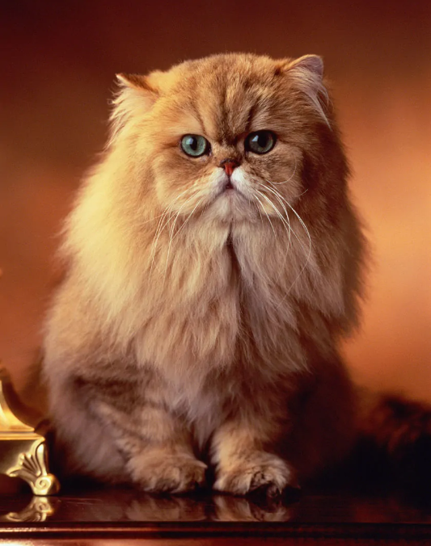

波斯猫
（哺乳纲食肉目猫科猫属动物）
波斯猫（Persian cat）是以阿富汗的土种长毛猫和土耳其的安哥拉长毛猫为基础，在英国经过100多年的选种繁殖，于1860年诞生的一个品种。
波斯猫是最常见的长毛猫，波斯猫有一张讨人喜爱的面庞，长而华丽的背毛，优雅的举止，故有“猫中王子”、“王妃”之称，是世界上爱猫者最喜欢的纯种猫之一，占有极其重要的地位。

布偶猫
（食肉目猫科动物）
布偶猫是猫中较大、较重的一种。它的头呈V形，眼大而圆，被毛丰厚，四肢粗大，尾长，身体柔软，多为三色或双色猫。
布偶猫抱起来像软绵绵的布偶，而且对人非常友善。它性格大胆，不知道什么叫恐惧，而且对疼痛的忍耐性相当强，常被误认为缺乏疼痛感，因此很能容忍孩子的玩弄，是非常理想的家庭宠物。

英国短毛猫
英国短毛猫，体形圆胖，四肢粗短发达，毛短而密，头大脸圆，温柔平静，对人友善，极易饲养。大而圆的眼睛根据被毛不同而呈现各种颜色。作为一个古老的猫品种，其历史可追溯至古罗马时期的家猫，由于拥有悠久的育种历史，可以称得上是猫家族中的典范。英国短毛猫除了拥有固定耳距，代表性的遗传特征之外，又具有丰富的变异性，如背毛色眼睛颜色等。更重要的是，有了广泛的配种历史后，这种猫拥有了更健康的身体和更温驯的性格。